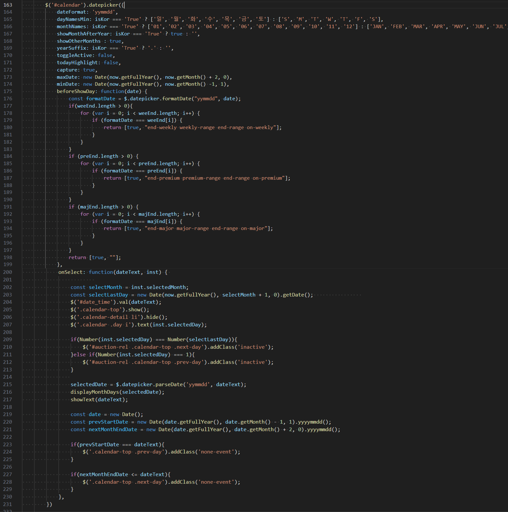

K-Auction Main Renewal
- Period
- 2024.02 - 2024.03
- Skill
- C#, JQUERY, CSS
- Publishing, Front
- 100%
- Description
- 다양한 컨텐츠 제공을 위한 K-Auction 메인 페이지 리뉴얼 작업
Project Background
- ① 2021년 리뉴얼 이후, 회원가입, 마이페이지 등 부분적인 개선을 지속해왔음
- ② 인터넷 이용 환경의 변화, 최근 1년간 방문자 브라우저해상도 가로1600px 이상 사용자 약 66.4% 이상 추정
- ③ 현재 자회사, 관계사의 성장에 케이옥션 홈페이지에서 홍보될 수 있는 구간의 니즈 확인
- ④ 홈페이지 이용에 대한 현업 불편사항 검토
Datapicker 커스텀
- ① Datepicker를 활용하여 달력 UI를 설정하고, 사용자가 날짜를 선택하거나 탐색할 수 있도록 구현했습니다.
- ② 날짜를 선택하면 그 날짜에 해당하는 경매 일정을 보여주는 로직입니다.

- ③ beforeShowDay 함수는 날짜를 표시하기 전에 호출되는 이벤트로, 이 함수를 통해 특정 날짜에 클래스를 추가하여 스타일링했습니다.
-
④ 날짜를 선택하면 onSelect 콜백이 호출되어 작업을 수행합니다.
- 선택된 날짜와 월 정보를 폼 필드($('#date_time'))와 달력 상단에 표시합니다.
- 선택된 날짜가 첫날이거나 마지막 날인 경우 prev-day와 next-day 버튼을 비활성화(inactive 클래스 추가)하여 이동할 수 없게 해줍니다.
- ⑤ 해상도에 따라 달력 표현 방식을 다르게 해줍니다. (해상도 821px 이하일 경우 월별, 그 이상이면 주별 표시)
- ⑥ 각 날짜는 renderDayElement() 함수를 통해 화면에 렌더링됩니다.

ProgressBar 진행 상태
- ① 경매의 상태와 종류에 맞는 UI를 구성하기 위해 switch문을 사용하여 경매별 로직을 독립적으로 처리 할 수 있도록 했습니다.
- ② 영문 지원을 해주기위해 SiteHelper.IsKorCulture 값에 따라 한국어 또는 영어로 메시지를 표시하도록 구현 했습니다.
- ③ circumference 비율을 사용하여 원형 진행 바의 진행 상태를 동적으로 계산하고, 이를 인라인 스타일로 적용할 수 있도록 했습니다.
Font API 활용
- ① 작품 컨셉에 따라 어울리는 폰트를 적용 하기위해 Font API를 활용하여 개발 했습니다.
- ② 한글, 영어 폰트 정보를 그룹화 하여 각각의 폰트 정보 기반으로 CSS @font-face 규칙을 동적으로 생성하는 구조 입니다.